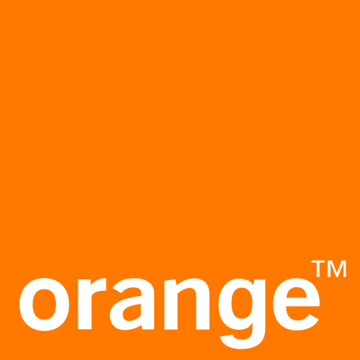
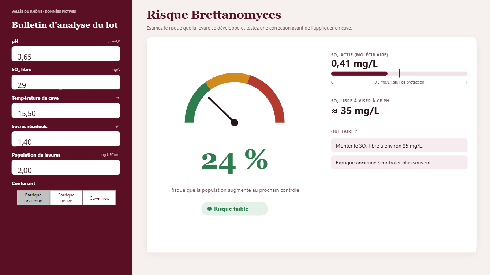

Profil
Future diplômée en janvier 2027 d'un Master en Statistiques Appliquées et Analyse Décisionnelle, je recherche un poste de Data Analyst ou de Business Analyst pour concevoir des tableaux de bord fiables et utiles à la décision des équipes métier.
Expériences professionnelles
-
avr. – sept. 2026Biot
Dassault Systèmes
Stagiaire ingénieure en modélisation mathématique
- Projet de l'équipe Mental Health pour mieux repérer, dès le plus jeune âge, les troubles du neurodéveloppement.
- Consolidation et contrôle qualité d'un jeu de données de suivi longitudinal de 80 enfants mesurés de 0 à 7 ans.
- Construction sous R de courbes de référence par âge et d'indicateurs de suivi qui signalent les enfants s'écartant de la norme.
- Restitution des résultats en conférence et sous forme de poster.
-
avr. – sept. 2025Caen

Orange
Stagiaire Data Scientist
- Projet de l'équipe Orange Money pour repérer les comportements frauduleux dans les transferts d'argent de plusieurs millions d'utilisateurs.
- Structuration des données de transactions en Python et calcul d'une dizaine d'indicateurs par groupe d'utilisateurs, comme la taille, la densité des échanges ou les distances.
- Analyse exploratoire pour écarter les indicateurs redondants et garder les plus discriminants.
- Mise au point d'une règle de classement des groupes suspects avec des seuils de décision.
-
avr. – juin 2024Avignon
Inter Rhône
Stagiaire Data Analyst
- Nettoyage et analyse statistique des mesures physico-chimiques de 100 échantillons de vin.
- Modèle prédictif du risque de défaut de goût et identification des facteurs qui pèsent le plus sur ce risque.
- Recueil des besoins des vignerons, des utilisateurs non spécialistes, et conception d'un tableau de bord Power BI d'aide à la décision.
- Présentation de l'outil à ses utilisateurs. Voir la reproduction sur données fictives
Formation
-
2024 – 2026Caen
Master Mathématiques Appliquées, Statistiques
Université Caen Normandie
- Spécialisation en Statistiques Appliquées et Analyse Décisionnelle.
- Cours clés en bases de données, enquêtes et sondages, informatique de l'entreprise, analyse de données et optimisation.
-
2020 – 2024Nice
Licence MIASHS
Université Côte d'Azur
- Spécialisation en Mathématiques et Informatique Appliquées aux Sciences Humaines et Sociales.
- Cours clés en statistiques et modélisation, data mining, marketing et microéconomie.
Dashboards

Pilotage des ventesPrévision des ventes et risque de perte client, deux modèles Python intégrés à Power BI

Risque BrettanomycesSimulateur de risque pour un lot de vin, une régression logistique Python calculée en DAX
Contact
- Paris
- cloegueus1@gmail.com
Compétences
Visualisation et BI
- Power BI
- Power Query
- DAX
- Excel
- R Shiny
Langages
- SQL
- Python
- R
- SAS
- VBA
Bases de données
- PostgreSQL
- MySQL
Environnement
- Git
- Docker
Savoir-faire
- Recueil des besoins métier
- Définition d'indicateurs
- Contrôle qualité des données
Certification
- Microsoft Power BI Data Analyst (PL-300) en cours
Langues
- Français langue maternelle
- Anglais B1/B2
- Italien A2
Centres d'intérêt
- Conception graphique sous Adobe Photoshop
- Randonnée et bivouac